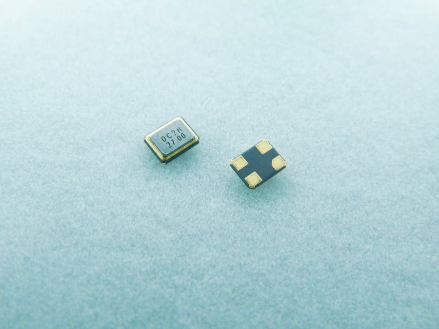

怎么读数据手册：六步法
一份规格书几十页，真正要读的只有五块：型号后缀、绝对最大值、推荐工作条件、电气特性（含测试条件）、时序与热阻。剩下的多是营销与封装细节。这一章用本板真实型号做六步法演练，并列出十个最常见的误读——每一条都能在板子上找到对应的坑。

读完这一章，你应该能
- 从型号后缀判断电压、封装、温度等级、包装
- 一眼区分「绝对最大额定」与「推荐工作条件」，不再拿极限当设计值
- 在电气特性表里找到测试条件，判断这个数在你的工况下是否成立
- 读时序表核对建立/保持时间，解释「理论上能通、实际不通」
- 用 RθJA 与降额曲线判断热是否过关，并看懂 Layout 推荐图
2.8.1第一步：型号后缀里有一半信息
| 本板型号 | 后缀含义 | 看错会怎样 |
|---|---|---|
| ME6209A33M3G | A33=3.3V 固定输出、M3=SOT-23、G=无铅 | 买成 A50 就是 5V 输出，直接烧 3.3V 器件 |
| XC6206P282MR | 282=2.8V、P=活性高、MR=SOT-23 | 282 与 332 差 0.5V，CSI 电平不对、摄像头不出图 |
| SMBJ5.0A | 5.0=VRWM、A=单向 | 买成 SMBJ5.0CA（双向）用于直流轨，钳位特性不同 |
| TJA1050T/CM,118 | T=SO8、/CM=版本、118=卷带 | 换成 TJA1050T/3 才有 VIO 脚，脚位不同 |
| MT3420B | 固定 Vref=0.6V，B 为版本 | 换成别的系列，Vref 变了，输出全错 |
后缀错一位，等于换了一颗器件。采购/替换前必须比对完整型号，不能只看前面几个字符——这是硬件工程师最容易犯的低级错误，也是唯一「不需要动脑、只需要细心」的一步。
2.8.2第二步：绝对最大值 ≠ 工作条件
两者是完全不同的概念：
| 栏目 | 含义 | 怎么用 |
|---|---|---|
| Absolute Maximum Ratings | 「不永久损坏」的边界，瞬时也不能超 | 只用于判断「会不会坏」，不能作为设计点 |
| Recommended Operating Conditions | 厂家保证功能的区间 | 设计点应落在区间中部，不是边缘 |
| Electrical Characteristics | 在特定测试条件下的 min/typ/max | 设计用 min 或 max，不用 typ |
例：SoC 的 IO 绝对最大常标「−0.5V ~ VDD+0.5V」，推荐工作却是「0 ~ VDD」。这意味着 3.4V 的瞬间尖峰不会立刻坏，但它不在推荐区间——长期打 ESD 二极管，寿命会缩短。
又例：SMBJ5.0A 的 VRWM=5V 是「推荐工作上限」，VBR≈6.4–7V 是「开始击穿」，VC≈9.2V 是「钳位残压」。三个数对应三种状态，混用就会得出「5V TVS 输出也是 5V」的错误结论。
2.8.3第三步：min / typ / max 三列，只用两列
规格书每行参数常有三列。工程上只信两列：
- min：用于「不能低于」的判断——hFE 最小值、VOH 最小值、Isat 最小值。
- max：用于「不能高于」的判断——VCE(sat) 最大值、VF 最大值、IR 最大值、Rds(on) 最大值。
- typ：只用于「估算典型效率/典型波形」，永远不作为设计余量的依据。
算例：SS8550 的 hFE typ 可能是 200，min 85。你按 200 算出 Ib=0.5mA 就够，实际遇到 85 的片子只能驱动 42mA，蜂鸣器不响。用 min 算，得到 Ib≥1.2mA 才安全——本板用 2.6mA，就是按 min 再留 2 倍。
这也解释了为什么「同一块板，有的蜂鸣器响、有的不响」：不是焊接问题，是 hFE 落在分档的不同位置。
2.8.4第四步：每个数字后面的测试条件
这是整章最核心的一条。脱开条件读数字，等于读错：
| 参数 | 标注条件 | 你的工况不同时 |
|---|---|---|
| VF=0.45V | @IF=1A、25°C | 0.1A 时约 0.3V；125°C 时更低 |
| Rds(on)=30mΩ | @Vgs=10V | 3.3V 驱动可能 150–200mΩ |
| C=22µF | @0V 偏压、25°C | 3.3V 偏压下可能只剩 12µF |
| hFE=120–200 | @VCE=1V、IC=100mA | IC=10mA 时增益更低 |
| PD=0.35W | @Ta=25°C、标准焊盘 | 85°C 环境按降额只剩 0.1–0.15W |
读法：先找你要用的那一行，再读它右边的条件，最后问「我的电路是不是这个条件」。不是，就去找曲线图（datasheet 里几乎都有 VF–IF、Rds(on)–Vgs、C–VDC 的曲线），按曲线取值。
2.8.5第五步：时序表比电气表更容易「坑死人」
接口能不能通，往往不由电压决定，而由时序决定。要读的是四个量：
- tsu（建立时间）：数据必须在时钟边沿前稳定多久；
- th（保持时间）：时钟边沿后还要保持多久；
- tr/tf：上升/下降时间上限；
- tco（时钟到输出）：决定总线上能挂几个器件、能跑多快。
算例（I2C 400kHz）：规范给 tr ≤300ns。本板 4.7k 上拉 + 100pF 总线 → tr≈1.03µs，直接超标 3 倍。所以「硬件能通信」不代表「符合规范」——示波器上看到的是一个「圆角方波」，逻辑分析仪可能还能解出来，换个从机就失败。
再例（SPI）：SoC 的 tco 最大 8ns、从机 tsu 最小 5ns，走线延时 1ns —— 余量只有 2ns。加一个电平转换芯片（传播延迟 3–5ns）就把余量吃光。时序余量必须按 max+max 累加，不能按 typ 估。
2.8.6第六步：热阻、降额曲线与 Layout 图
规格书最后几页常有三个「不起眼但要命」的内容：
- RθJA / RθJC：结到环境/结到壳的热阻。用它把「PD=0.35W」换算成「我的环境能扛多少」。
- 降额曲线：功率/电流随温度下降的比例。电阻 70°C 起降、电解按 10°C 寿命减半，都在这一页。
- Recommended Land Pattern / Layout：焊盘尺寸、散热过孔、走线建议。这是厂家的「最低要求」，不是「参考」。
本板 CORE 的电源区域之所以看起来「电容排得很密」，就是按 Layout 建议把输入电容紧贴芯片。原理图上看不出差别，PCB 上差 5mm 就是两种结果。
2.8.7十个常见误读（每条都对应一个真实事故）
- 把 Absolute Maximum 当工作电压用（3.6V 标称，实际设计在 3.6V）。
- 用 typ 值做设计（hFE 200 → 批量一半不饱和）。
- 忽略 VF 的测试电流（按 1A 的 0.45V 算 10mA 的电路）。
- 忽略 Rds(on) 的 Vgs 条件（3.3V 驱动 10V 器件）。
- 忽略电容的直流偏压降容（22µF 当 22µF 用）。
- 忽略温度对漏电/增益的影响（85°C 时肖特基漏电翻 60 倍）。
- 不读时序表（I2C 上拉按「能通就行」选）。
- 不读降额曲线（0.35W 的管子跑 0.3W）。
- 不看 Layout 建议（输入电容放远、FB 走长线）。
- 型号后缀错位（A33 买成 A50）。
六步法速查
① 型号后缀 → ② 绝对最大（只判坏不判用）→ ③ 推荐区间（设计点居中）→ ④ 电气表 min/max + 条件 → ⑤ 时序表按 max 累加 → ⑥ 热阻/降额/Layout。每一步都问一句：「这个数是在什么条件下测的？我的电路是不是这个条件？」
三个「看起来没问题」的坑
① 表格里 typ 一列很漂亮，min/max 一列很吓人——设计只能按吓人的那一列。
② 曲线图比表格更准：表格给的是「某一点」，曲线给的是「全区间」。
③ 不同厂家的同一型号可能脚位/参数都不同，替换必须重新读手册。
练习（答案在折叠里）
1. hFE typ=200、min=85，按哪个设计？为什么？
2. Rds(on)=30mΩ@Vgs=10V，3.3V 驱动能直接用吗？
3. 22µF/6.3V X5R 在 3.3V 下还能算 22µF 吗？
4. I2C 400kHz 的 tr 上限是多少？4.7k+100pF 合格吗？
5. 为什么时序余量要按 max+max 累加？
6. 同一个 SOT-23-5 封装，LDO 能直接换另一家的吗？
第二篇到此结束：八类器件从「丝印怎么读」走到「规格书怎么用」。第三篇开始逐页拆 MINI 4 页 + CORE 8 页原理图，每页一章，逐个网络、逐颗器件说清取值理由。